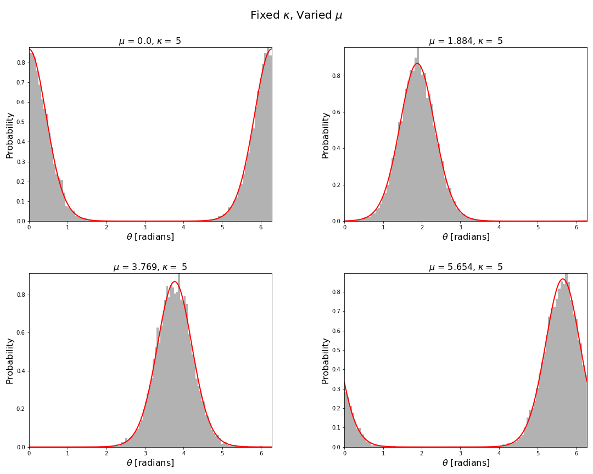
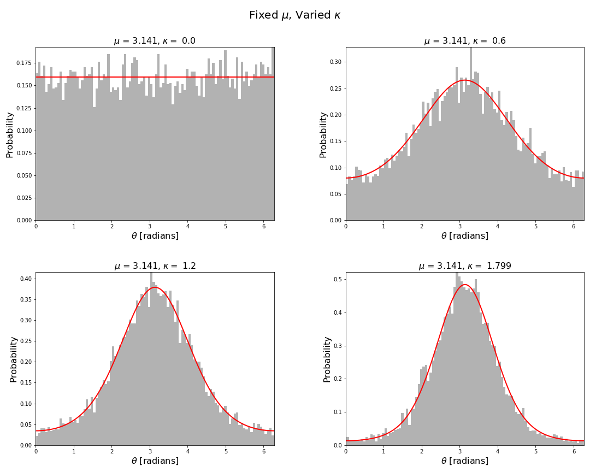
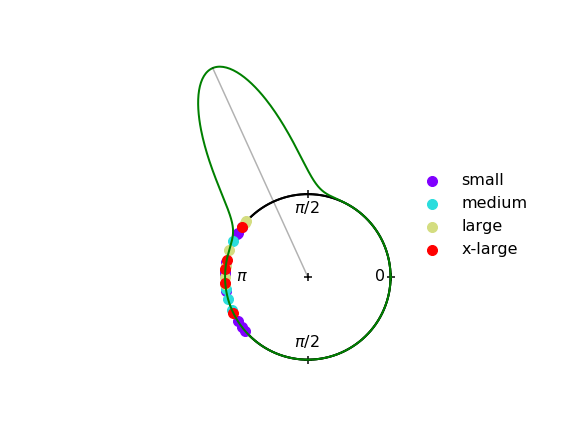
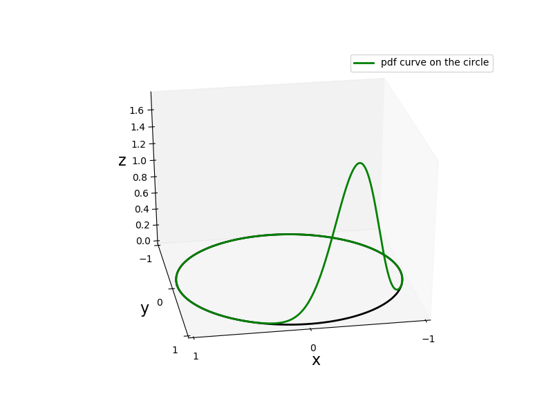
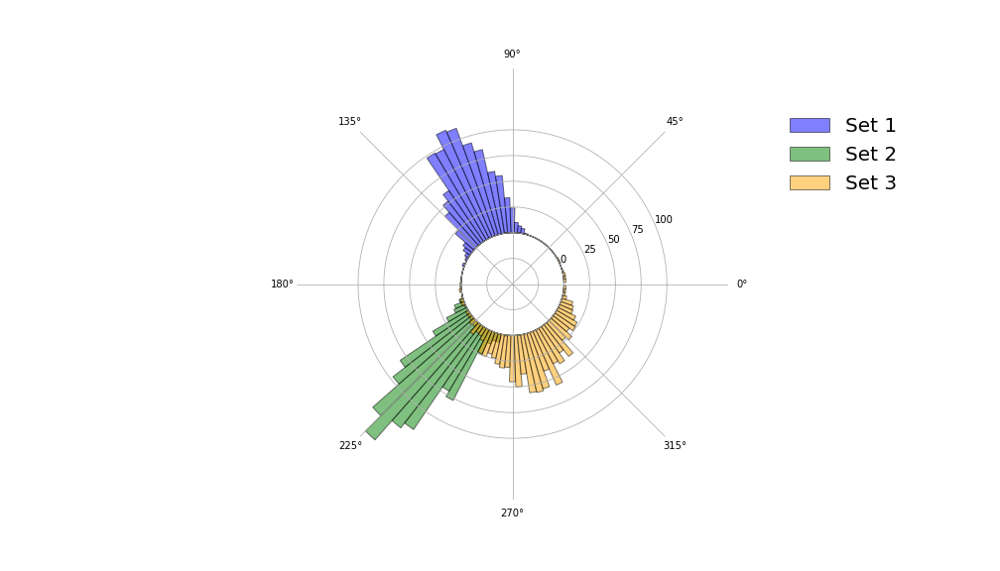

This is the first in a series of related blog posts/tutorials looking at directional statistics and machine learning. In this first post we will look at the von Mises distribution. In particular, we will implement functions to calculate and sample from the von Mises distribution [1]. Moreover, we will also implement a few functions to visualise circular distributions.
Strictly speaking one does not need to write their own implementation for calculating the von Mises probability density function or sampling from it, as it is available in the scipy statistics package. Numpy also has an implementation as well, which can be found here. However, it is quite easy to write your own implementation (see Refs. [2,3]) and you may need to implement your own if you are not working with python. Moreover, these libraries don’t implement many other functions related to field of directional statistics and this is something we will be looking at doing in this series.
Why directional statistics? To answer this question we quote Ronald Fisher who in 1953 [4] answered this question very succinctly
“The theory of errors was developed by Gauss primarily in relation to the needs of astronomers and surveyors, making rather accurate angular measurements. Because of this accuracy it was appropriate to develop the theory in relation to an infinite linear continuum, or, as multivariate errors came into view, to a Euclidean space of the required dimensionality. The actual topological framework of such measurements, the surface of a sphere, is ignored in the theory as developed, with a certain gain in simplicity.
It is, therefore, of some little mathematical interest to consider how the theory would have had to be developed if the observations under discussion had in fact involved errors so large that the actual topology had had to be taken into account. The question is not, however, entirely academic, for there are in nature vectors with such large natural dispersions.” - R. Fisher
Directional statistics has many uses in the sciences and engineering. Here we list a few such examples [4,5,6]:
- Earth sciences:
- paleomagnetism (This was a major driving force behind the development of analysis of spherical data and more generally directional data.)
- earth quakes
- rotation of tectonic plates
- Meteorology:
- Wind directions
- Times of the day at which certain weather events occur, e.g., heavy rain and thunderstorms
- Biology:
- Animal navigation
- Circadian rhythms
- Physics:
- Fractional parts of atomic weights
- Directions of optical axes of crystals
- Distribution on the celestial sphere of high-energy cosmic rays
- Engineering:
- Tracking, e.g., angle of arrival measurements
- Other areas:
- Image analysis
- Psychology and Medicine
Introduction
The von Mises distribution was introduced by Richard von Mises in 1918 [1]. Its probability density function is defined as

 is the random angular variable,
is the random angular variable,  is the mean direction such that
is the mean direction such that ,
,  is a measure of the
concentration of the probability density function and lies in the semi-infinite interval
is a measure of the
concentration of the probability density function and lies in the semi-infinite interval  . Stricyly speaking the range of and can be any interval of length
. Stricyly speaking the range of and can be any interval of length  . The larger the concentration, the more concentrated it is about the mean direction.The function
. The larger the concentration, the more concentrated it is about the mean direction.The function
 is the modified Bessel function of the first kind,
is the modified Bessel function of the first kind,

Angular random variables are more naturally modelled using circular distributions rather than the almost ubiquitous use of normal distributions. They are more natural for a number of reasons, a few of which we will now briefly mention:
- The von Mises distribution is defined on the correct sample space whereas the
normal distribution is not bounded to the interval of length , e.g.,
 or
or  . The normal distribution can be a good approximation away from the boundaries. However, its use can lead to issues near the boundaries.
. The normal distribution can be a good approximation away from the boundaries. However, its use can lead to issues near the boundaries. - The von Mises distribution has the correct limiting behaviour as
 whereas the normal distribution does not. The von Mises distribution approaches the uniform distribution on the unit circle in this limit, so that all directions are equally likely.
whereas the normal distribution does not. The von Mises distribution approaches the uniform distribution on the unit circle in this limit, so that all directions are equally likely. - Naive use of normal distributions for circular problems can lead to the incorrect fusion of the prior with the measurement likelihood. Therefore, for example, if you were performing angle of arrival measurements in a tracking application you may be incorrectly fusing measurements when performing a Bayesian update.
The mean direction and the variance

The input parameters for the von Mises distribution are the mean direction and the concentration whereas experimental error is commonly given in terms of a variance. Fortunately, it is possible to show that the variance is approximately inversely proportional to the concentration, thus allowing us a way to estimate the concentration using the variance. We rewrite the equation above as


 are the Bernoulli numbers. This series converges for
are the Bernoulli numbers. This series converges for  . If we keep only the first term
. If we keep only the first term

 grow exponentially fast with . Since the second term is divided by
grow exponentially fast with . Since the second term is divided by  the approximation
the approximation
 should be reasonable provided is large enough. Vice versa if we have an empirically determined variance we could approximate the concentration by
should be reasonable provided is large enough. Vice versa if we have an empirically determined variance we could approximate the concentration by  .
In this notebook we will be making use of the algorithm by Best and Fisher to sample the von-Mises distribution. This algorithm only requires sampling of a uniform distribution on
.
In this notebook we will be making use of the algorithm by Best and Fisher to sample the von-Mises distribution. This algorithm only requires sampling of a uniform distribution on  and using some trignometric and logarithmic functions [2].
and using some trignometric and logarithmic functions [2].
Implementation
All code in this tutorial is available on my Github account in this repository. Writing a function to evaluate the von Mises probability density function is relatively easy. Here we show a simple python implementation:
def pdf_von_Mises(theta,mu,kappa):
"""
pdf_von_Mises(theta,mu,kappa)
=============================
Calculates the von Mises probability density distribution at the angle theta with mean
direction mu and concentration kappa.
INPUT:
* theta - angle at which to evaluate the von Mises distribution (float or numpy array)
* mu - mean direction (float)
* kappa - concentration (float)
OUTPUT:
* pdf - the probability density function is an Nx1 (same size as theta) array of values of a von Mises
distribution with mean direction mu and concentration kappa.
References:
===========
See the following textbook/monograph
[1] N. I. Fisher, Statistical analysis of circular data, Cambridge University Press, (1993).
"""
pdf = np.exp(kappa * np.cos(theta - mu)) / (2.0*np.pi*iv(0,kappa));
return pdf
To sample the von Mises distribution one needs to write a more involved function. As mentioned above we are implementing the algorithm proposed by Best and Fisher [2]. We refer the interested reader to [2,3] for further details about the algorithm. A python implementation of this algorithm is as follows:
def rand_von_Mises(N,mu,kappa):
"""
rand_von_Mises(N,mu,kappa)
==========================
Generates theta an Nx1 array of samples of a von Mises distribution
with mean direction mu and concentration kappa.
INPUT:
* N - number of samples to be generated (integer)
* mu - mean direction (float)
* kappa - concentration (float)
OUTPUT:
* theta - an Nx1 array of samples of a von Mises distribution with mean
direction mu and concentration kappa.
References:
===========
Algorithm first given in
[1] D. J. Best and N. I. Fisher, Efficient Simulation of the von Mises
Distribution, Applied Statistics, 28, 2, 152--157, (1979).
Also given in the following textbook/monograph
[2] N. I. Fisher, Statistical analysis of circular data, Cambridge University Press, (1993).
"""
# Checks
# =======
# N should be a positive non-zero integer scalar
if (type(N) is not int):
raise TypeError("N must be a positive non-zero integer.")
if N <= 0:
raise Exception("N must be a positive non-zero integer.")
# mu should be a real scalar. It can wrap around the circle, so it can be negative, positive and also
# outside the range [0,2*pi].
if (type(mu) is not float) and (type(mu) is not int):
raise TypeError("mu must be a real scalar number.")
# kappa should be positive real scalar
if (type(kappa) is not float) and (type(kappa) is not int):
raise TypeError("kappa must be a positive float.")
if kappa < 0:
raise Exception("kappa must be a positive float.")
# SPECIAL CASE
# ==============
# As kappa -> 0 one obtains the uniform distribution on the circle
float_epsilon = np.finfo(float).eps
if kappa <= float_epsilon:
theta = 2.0 * np.pi * np.random.rand(N,1) # [0,1] -> [0,2*pi]
return theta
# MAIN BODY OF ALGORITHM
# =======================
# Used same notation as Ref.~[2], p49
a = 1.0 + np.sqrt(1.0 + 4.0 * kappa**2)
b = (a - np.sqrt(2.0 * a)) / (2.0 * kappa)
r = (1.0 + b**2) / (2.0 * b)
counter = 0
theta = np.zeros((N,1))
while counter <= N-1:
# Pseudo-random numbers sampled from a uniform distribution [0,1]
U1 = np.random.rand()
U2 = np.random.rand()
U3 = np.random.rand()
z = np.cos(np.pi * U1)
f = (1.0 + r *z) / (r + z)
c = kappa * (r - f)
if ( ((c * (2.0 - c) - U2) > 0.0) or ((np.log(c/U2) + 1.0 - c) > 0.0) ):
theta[counter] = np.mod(np.sign(U3 - 0.5) * np.arccos(f) + mu, 2*np.pi)
counter += 1
return theta
Now we can visualise the von Mises distribution by plotting the pdf and sampling the distribution using the above functions. Code to produce these figures and the data is given in the associated repository. In particular for fixed concentration and varied mean direction we have

For fixed mean direction and varied concentration we have

The above figures are fairly typical histogram and curve plotting graphics. The figures below are a little more specialised for which we had to implement a few functions using standard matplotlib functions. One such function is plot_angular_density() which plots the probability density function of a circular distribution on the unit circle.
def plot_angular_density(theta,pdf,colour="blue",maxline=False,axes="off",fs=16):
"""
plot_angular_density(theta,pdf,colour="blue",maxline=False,axes="off",fs=16)
============================================================================
Plots the probability density function of a circular distribution on the unit
circle.
INPUT:
* theta - angular grid - an array of floats.
* pdf - the values of the probability density function on the angular grid theta.
* colour - an optional argument, the colour of the pdf curve, a string.
* maxline - an optional argument, whether or not to include a line connecting the
centre of the circle with the maximum value of pdf, boolean.
* axes - an optional argument, whether or not to include the axes, boolean.
* fs - an optional argument, the fontsize.
OUTPUT:
* A plot on a circle of a circular distribution.
* ax (axes) - axes on which the plot is constructed.
"""
# Draw the unit circle
# ====================
# Radius
r = 1.0
# Angular grid
ctheta = np.linspace(0,2*np.pi,500, endpoint=False)
# Convert polar coordinates to cartesian coordinates
[x,y] = polar2cartesian(r,ctheta)
# Plot the unit circle
plt.plot(x,y,color='black',lw=2,zorder=0)
# Draw angular probability density
# ================================
# PDF will be drawn on the circle, so we need to account for the radius of the unit circle
d = r + pdf
# Convert polar coordinates of the pdf to cartesian coordinates
[xi,yi] = polar2cartesian(d,theta)
# Plot the PDF
plt.plot(xi,yi,color=colour,lw=2)
# Layout
ax = plt.gca()
ax.set_aspect('equal')
ax.axis(axes)
# Add axes angles in radians
plt.text(0.8, -0.05, r"$0$", fontsize=fs)
plt.text(-0.17, 0.77, r"$\pi/2$", fontsize=fs)
plt.text(-0.87, -0.05, r"$\pi$", fontsize=fs)
plt.text(-0.17, -0.85, r"$\pi/2$", fontsize=fs)
# Add axes tick marks
plt.scatter(0,0,marker="+",s=50,color='black')
plt.scatter(1,0,marker="+",s=50,color='black')
plt.scatter(0,1,marker="+",s=50,color='black')
plt.scatter(-1,0,marker="+",s=50,color='black')
plt.scatter(0,-1,marker="+",s=50,color='black')
if maxline:
# Add a line from the origin to the maximum of the pdf
idx = np.argmax(pdf)
lx = [0,xi[idx]]
ly = [0,yi[idx]]
plt.plot(lx,ly,color="black",alpha=0.3)
return ax
In the next figure this function is used in conjunction with the function plot_angular_scatter(), which creates a scatter plot on a circle of samples from a circular distribution.
def plot_angular_scatter(samples,labels=None,ms=100):
"""
plot_angular_scatter(samples,labels=None,ms=100)
================================================
Creates a scatter plot on a circle of samples from a circular distribution.
INPUT:
* samples - samples of a circular distribution - either a scalar or array of floats.
* labels - an optional argument containing class labels, default is None.
* ms - an optional argument markersize, default is 100.
OUTPUT:
* Scatter plot on a circle of samples from a circular distribution.
* ax (axes) - axes on which the plot is constructed.
"""
# Plot the unit circle S^{1}
# ==========================
# Radius
r = 1.0
# Angular grid
theta = np.linspace(0,2*np.pi,500, endpoint=False)
# Convert polar coordinates to cartesian coordinates
[x,y] = polar2cartesian(r,theta)
# Plot the circle
plt.plot(x,y,color='black',lw=2,zorder=0) # zorder=0 puts the circle behind all the data
# Make aspect square
ax = plt.gca()
ax.set_aspect('equal')
# Make the scatter plot of samples
# ================================
# Convert polar coordinates to cartesian coordinates
[xi,yi] = polar2cartesian(r,samples)
if labels is None:
# if there are no labels plot every point a different colour
colors = cm.rainbow(np.linspace(0, 1, len(xi)))
scatter = plt.scatter(xi,yi,color=colors,label=labels)
else:
# if labels are given create a dictionary were the keys are
# the distinct labels and the values are distinct colours
dic = distinct_colours(labels)
# Loop over each distinct class (label)
for k in dic.keys():
# Get indices for this distinct class
indices = [i for i, l in enumerate(labels) if l == k]
# Get coordinates for this distinct class
x = [xi[i] for i in indices]
y = [yi[i] for i in indices]
# Plot this class
plt.scatter(x,y,color=dic[k],label=k,s=ms)
# Turn axes off
ax = plt.gca()
ax.axis('off')
return ax

In the next figure we plot a three dimensional representation of the von Mises probability density function using the function plot_angular_density_3d().
def plot_angular_density_3d(theta,pdf,colour="blue",axes="off",fs=16,label=None):
"""
plot_angular_density_3d(theta,pdf,colour="blue",axes="off",fs=16)
============================================================================
Plots the probability density function of a circular distribution on the unit
circle.
INPUT:
* theta - angular grid - an array of floats.
* pdf - the values of the probability density function on the angular grid theta.
* colour - an optional argument, the colour of the pdf curve, a string.
* axes - an optional argument, whether or not to include the axes, boolean.
* fs - an optional argument, the fontsize.
OUTPUT:
* ax (axes) - Return axes of plot
* A plot on a circle of a circular distribution.
"""
# Set projection
ax = plt.axes(projection='3d')
# Draw the unit circle
# ====================
# Radius
r = 1.0
# Angular grid
ctheta = np.linspace(0,2*np.pi,500, endpoint=False)
# Convert polar coordinates to cartesian coordinates
[x,y] = polar2cartesian(r,ctheta)
# Plot the unit circle
plt.plot(x,y,0,color='black',lw=2,zorder=0)
# Draw angular probability density
# ================================
# Convert polar coordinates to cartesian coordinates
[xi,yi] = polar2cartesian(r,theta)
z = pdf
# Plot the PDF
ax.plot(xi,yi,z,color=colour,lw=2,label=label)
# Limits
ax.set_xlim((-1,1))
ax.set_ylim((-1,1))
# Turn off grid
ax.grid(False)
# Labels
ax.set_xlabel('x',fontsize=fs)
ax.set_ylabel('y',fontsize=fs)
ax.set_zlabel('z',fontsize=fs)
ax.zaxis.set_rotate_label(False)
# Ticks
ax.set_xticks([-1,0,1])
ax.set_yticks([-1,0,1])
return ax

The final two visualisations are polar histograms, which are constructed using the same function polar_hist().
def polar_hist(samples, nbins,colour="blue",ax=None,label=None,grid=True,circle_radius=1,density=True):
"""
polar_hist(samples, nbins,colour="blue",ax=None,label=None,grid=True,circle_radius=1,density=True)
==================================================================================================
Creates a histogram of samples from a circular distribution and plots in on a circle.
INPUT:
* samples - samples from a circular distribution, a scalar or array of floats.
* nbins - number of histogram bins.
* colour - an optional argument, the colour of the histogram.
* ax - an optional argument, ax is an axes object. Use ax to plot multiple polar histograms
on the same set of axes.
* label - an optional argument to pass a label for the data.
* grid - an optional argument, whether or not to show the polar grid.
* circle_radius - an optional argument, it is the radius on which the histogram is plotted.
If you choose density=True, you should accept the default of 1. However, if you set
density=False, you should manually select the radius depending on your data count.
* density - an optional argument, if true the normalised histogram is plotted, else the
count is used.
OUTPUT:
* A polar histogram plot is created.
* ax - the axes object on which the polar histogram was plotted. Use ax to plot multiple
polar histograms on the same set of axes.
"""
# The polar axis
if ax is None:
ax = plt.axes(polar=True, frameon=False)
# radius of inner circle
bottom = circle_radius
# theta grid
theta = np.linspace(0.0, 2*np.pi, nbins, endpoint=False)
# histogram bin heights and edges
bin_heights, bin_edges = np.histogram(samples,bins=nbins,range=(0,2*np.pi),density=density)
# height of radial bins
radii = bin_heights
# bin width
width = bin_edges[1] - bin_edges[0]
# bar plot on polar axes
bars = ax.bar(theta, radii, width=width, bottom=bottom,color=colour, edgecolor='k',alpha=0.5,label=label)
# polar grid
if not grid:
ax.grid(linewidth=2,color="black",alpha=0.5)
ax.set_rgrids([0,bottom], angle=222,labels=[])
ax.set_thetagrids([])
else:
if density:
radial = [0,0.5,1,1.5,2,2.5]
radial_labels = [x - bottom for x in radial]
else:
mx = max(bin_heights)
radial = range(0,mx+int(bottom*2),int(bottom/2))
radial_labels = [x - bottom for x in radial]
# First two labels are inside the inner circle (bottom),
# so remove them
radial_labels[0] = ""
radial_labels[1] = ""
# Update to correct labels
ax.set_rgrids(radial,labels=radial_labels)
return ax

Concluding remarks
The analysis of circular and more generally directional data is extremely important to many fields of study, but it is rarely given the same amount of attention as statistics in Euclidean spaces. This is the first in a series of tutorials looking at topics in directional statistics and machine learning. Today we looked at one of the most important circular distributions which has many applications. We presented how one might sample this distribution and also visualise circular data. In later tutorials we will consider other important directional distributions and machine learning algorithms which make use of them.
- Please note not all code is given in the blog article. For all code including all supporting functions please see the associated repository.
References
- Von Mises, R., Uber die ‘Ganzzahligkeit’ der Atomgewichte und verwandte Fragen, Physikalische Zeitschrift, 19, 490—500, (1918).
- Best, D. J. and Fisher, N. I., Efficient Simulation of the von-Mises Distribution, J. Appl. Stat.,28, 152—157, (1979).
- Fisher, N. I., Statistical Analysis of Circular Data, , Cambridge University Press, (1993)
- Fisher, R., Dispersion on a Sphere, Proceedings of the Royal Society of London. Series A, Mathematical and Physical Sciences, Vol. 217, No. 1130, pp. 295-305 (1953).
- Mardia, K.V. and Jupp, P.E., Directional Statistics. John Wiley & Sons, London (2000).